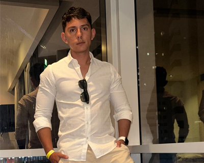
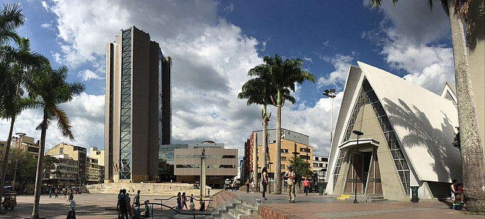
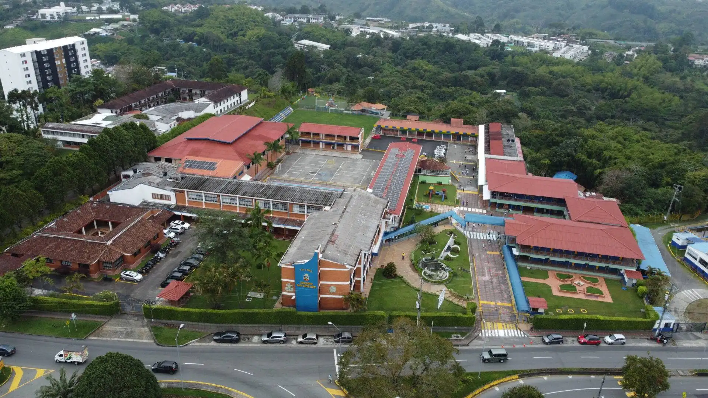
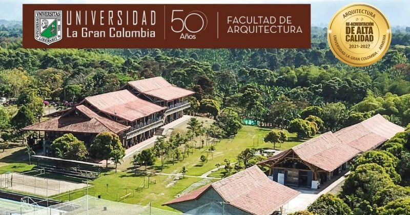
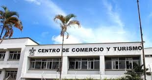
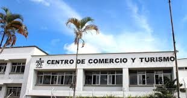

¿Quien soy?
Julian Gordillo
- Quindiano
- San Luisista
- Arquitecto Gran Colombiano
- Analista y desarrollador de software (SENA)
Soy Julian Gordillo
Tengo 30 años, naci en la ciudad de Armenia, arquitecto especialista de la universidad la Gran Colombia, estudiante de desarrollo de software en el SENA.
Quindiano
Nací en Armenia Quindio en el año 1994, donde crecí y vivi desde mi nacimiento, hasta el año 2012; y desde el año 2013 hasta la actualidad.
San Luisista
Egresado del colegio Franciscano San Luis Rey en el año 2011, donde estudié desde prejardin, primaria y secundaria.
Arquitecto Gran Colombiano
Egresado del pregrado de Arquitectura de la Universidad La Gran Colombia en el año 2020, en donde adquirí habilidades como: Diseño arquitectonico, diseño de interiores, diseño urbano, presupuesto y planeacion de obra, diseño gráfico, modelado 3d y renderización de imagenes y videos, dibujo arquitectónico con herramientas digitales como Autocad, Revit.
Egresado del posgrado en Gestion y Construccion de Edificaciones de la universidad La Gran Colombia en el año 2023
Analista y desarrollador de software (SENA)
 

Estudiante del tecnólogo en Analisis y Desarrollo de Software (ADSO) desde Junio del 2024, entendiendo la importancia de la tecnología e impulsado por las tendencias que mueven el mundo, para complementar mi formación profesional, buscando nuevos horizontes que me permitan desarrollarme a nivel profesional y personal en este nuevo camino.